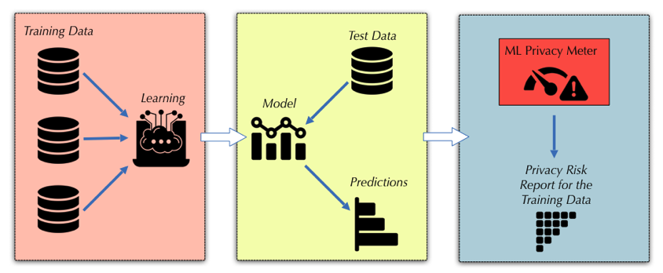

🗞️
News
Oct '25
Honored as a Top Reviewer at NeurIPS 2025!
Mar '25
DUCI is available in the open-source privacy auditing toolkit PrivacyMeter!
Feb '25
🎉 DUCI was selected for an Oral presentation at ICLR 2025 (Top 1.5% of submissions). See you in Singapore!
May '24
🎉 Our paper The Stronger the Diffusion Model, the Easier the Backdoor: Data Poisoning to Induce Copyright Breaches Without Adjusting Finetuning Pipeline
was selected for an Oral presentation at ICML 2024 (Top 1.5% of submissions). Interested in the first Copyright Infringement Attack? See you in Vienna!
Selected Publications
(* denotes equal contribution)
Selected Projects

An open-source library to audit data privacy in statistical and machine learning algorithms via membership inference.
- Implemented privacy auditing tools such as DUCI and RMIA.
- Contributed to the development and long-term maintenance of the library as one of the organizers.
Awards and Honors
Oral Paper Award - ICLR 2025, ICML 2024Top Reviewer Award - NeurIPS 2025.
President Graduate Fellowship - NUS, 2023, 2024, 2025.
University Research Award - CUHKSZ, 2021, 2022.
Dean's List - CUHKSZ, 2020, 2021, 2022.
School Academic Scholarship - CUHKSZ, 2021, 2022.
Bowen Scholarship - CUHKSZ, 2019, 2020, 2021, 2022.
Professional Services
Reviewer:
NeurIPS 2025 (Top Reviewer), ICLR 2025, ICML Workshop 2025, NeurIPS Workshop 2025
Sub-reviewer:
CCS 2024, USENIX Security 2024
Contact
I'm always happy to connect for research discussions or to share broader interests. I have a wide range of passions — from the arts (music, calligraphy, painting, engraving, and pottery) to sports (I go skiing every winter), and even clothing design, where I enjoy creating my own modern Chinese-style clothing. Just email me tongyao [at] u.nus.edu.